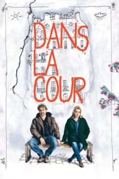

Em um Pátio de Paris (2014)



Avaliação (TMDb):


5.8/10 (60 votos)
Avaliação (Usuário):
Outro Título:Dans la cour (Título Original)
País:France, 97 minutos
Idiomas falados:Francês, Português
Gênero(s):Drama, Comédia
Diretor(s):Pierre Salvadori
Codec:MPEG-2 (DVD)
Número: 1829
Sinopse:
Com Catherine Deneuve, indicada ao Oscar e a diversos prêmios europeus, incluindo Cannes, César e Berlim. Antoine quer deixar de ser músico e, ao buscar uma nova profissão, começa a trabalhar como zelador. Mathilde, moradora do prédio, com seu jeito rico e esnobe, aos poucos aproxima-se de Antoine.
Elenco:
Catherine Deneuve, Pio Marmaï, Féodor Atkine, Nicolas Bouchaud, Gustave Kervern, Lévanah Solomon
Tipo de mídia: DVD5,
Legendas: Português
Alugado: Não
Tela: 2.55:1